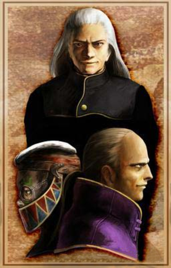

Craymen's Fleet Info A military mastermind called Craymen, is the leader of his own special fleet called the Black Fleet, which is controlled by the Empire. In Panzer Dragoon Saga, Craymen betrays the Empire and goes renegade. Now branded as a traitor, with a mysterious girl called Azel by his side, he seeks to form his own nation, attempting to beat the Empire in the race for ultimate control over the ancient technologies. He is ruthless and cunning. With his loyal fleet of battleships, he will stop at nothing to reach his ambitious goal. |
Craymen controls his own fleet called the Black Fleet. He is not to be taken lightly. The Ancient Age ships he posses are just as powerful as the Empires. |
 Craymen, top, is a ruthless man who will stop at nothing to reach his goal, even at the expense of innocent lives. Zastava, left and Arwen right, are Craymens most loyal officers. |